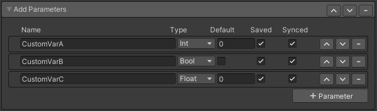

Add Parameters

Used to add custom parameters to the avatar. Keep in mind most other features automatically define parameters. This feature is only nessecary in more advanced cases where you need to specifically define a custom parameter.
- Name: The name of the parameter.
- Type: The type of value does this parameter can store.
- Bool: (True, False)
- Int: A whole number. (1, 2, 32)
- Float: A number with decimal places. (0.0, 1.12, -23.93)
- Default: Value the parameter will start with when the avatar loads.
- Saved: Will enabled the parameter will save and load when switching between avatars.
- Synced: When enabled, any changes done by the avatar wearer will sync to all remote clients. When disabled any changes to the parameter will only be local.